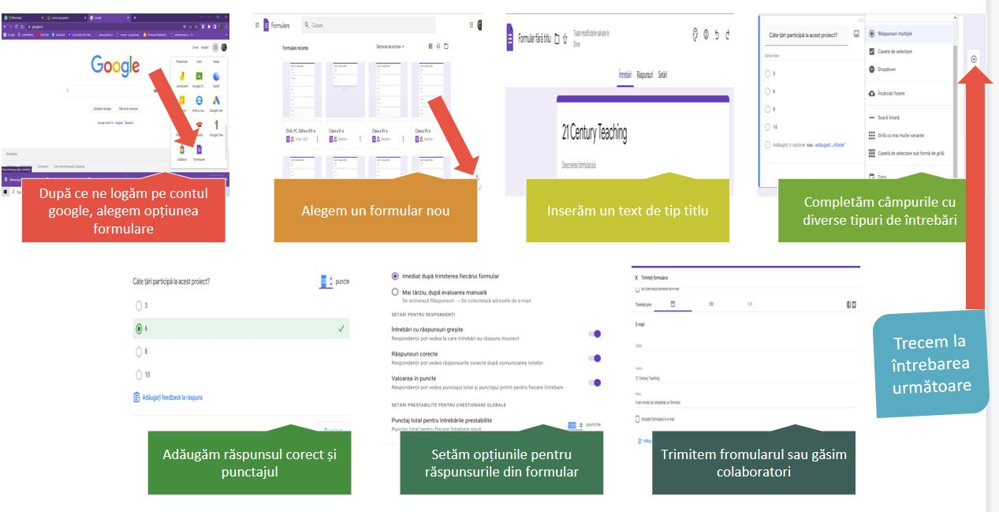

Ce este Google formulare?
De la teste la chestionare, Formulare Google Unul dintre cele mai bune instrumente de sondaj de toate tipurile care vă pot ajuta să faceți acest lucru. Dacă doriți să creați sondaje, teste sau sondaje online, Google Forms este unul dintre cele mai versatile instrumente disponibile în acest moment.
Formulare Google este un software de administrare a sondajelor inclus ca parte a suitei Google Docs Editors gratuită bazată pe web oferită de Google. Serviciul include, de asemenea, Documente Google, Foi de calcul Google, Prezentări Google, Desene Google, Site-uri Google și Google Keep.
Cum putem folosi Google formulare:
- Evaluarea elevilor
- Strangerea opiniilor
- Sumarizarea lectiilor
Unde găsim aplicația?

Cum utilizăm Google formulare?
←
Computer:
- Accesați forms.google.com.
- Faceți clic pe Blank Plus.
- Se va deschide un nou formular.
Pasul 1: Configurați un formular sau un test nou
- Pasul 2: editați și formatați un formular sau un test
- Editează-ți formularul
- Creați un test cu Google Forms
- Alegeți unde să salvați răspunsurile din formular
- Pasul 3: Trimiteți formularul pentru ca oamenii să îl completeze
- Când sunteți gata, puteți trimite formularul dvs. altor persoane și puteți colecta răspunsurile acestora.